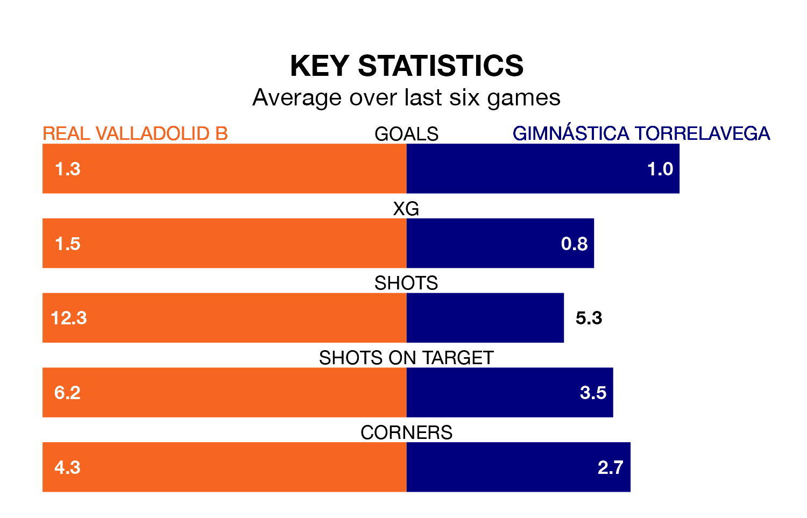

Gimnástica Torrelavega travel to Real Valladolid B on early Sunday in the Segunda División RFEF Group 1.
The visitors come into the game on the back of a defeat in their last match, having lost to Zamora CF 4-0 away.
Valladolid B, meanwhile, drew their last match, 0-0 against Villalbés.
With 34 goals in 29 games so far this season, Valladolid B are scoring more than average in the league with 1.2 goals per game. But they are conceding more than average too, letting in 48 goals at a rate of 1.7 per game.
Gimnástica Torrelavega are also above average scorers, with 1.2 goals per game, compared to a league average of 1.1. They have conceded 1.5 goals per game.
The hosts are in disappointing form in the Segunda División RFEF Group 1, with one win and two draws from their last six games.
With three wins and a draw over that period, the away side's form is better – they have taken 10 points from 18, compared to Valladolid B's five.
Valladolid B are 13th in the table after 29 games, of which they have won nine and drawn seven, earning 34 points.
Gimnástica Torrelavega are one place ahead of the home team in 12th, with nine wins and seven draws putting them on the same number of points.
In the last three years, Valladolid B and Gimnástica Torrelavega have played each other on three occasions. Valladolid B won two of them and they drew once.
Their last meeting was on November 26, when Valladolid B won 1-0 away.
Updated: 16:41 (UTC), 04/04/24